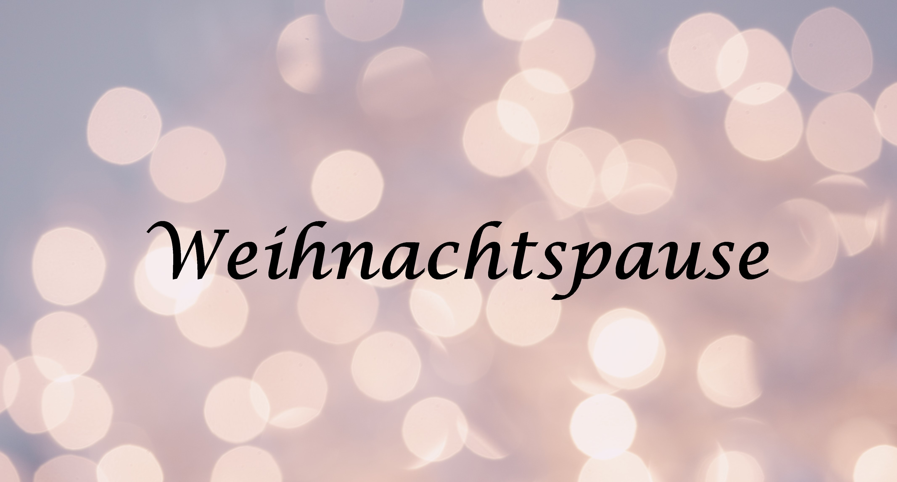

---

title: NO2 - Atlas Berlin
layout: default
bodyid: start
---

<!-- Featured -->
		<div class="wrapper style2">
			
				<section class="container">


					<div style="margin: auto; border: 2px solid red; border-radius: 15px">
						<h3 style="color: red">Aktuelle Infos zur Sammlerrückgabe:</h3>
						<p style="width: auto;" >
							Sie haben einen NO2-Sammler erhalten und bereits für 14 Tage Luftproben gesammelt? Erfahren Sie <a href="2019/12/09/sammlerrueckgabe.html">hier</a>, wann genau Sie den Sammler zurückbringen können.
						</p>
					</div>
					<br>

						<p></p>

					<header class="major">
						<h2>BerlinAir NO2-Atlas</h2>
						<span class="byline">Ein Citizen Science Projekt</span>
					</header>
					<div class="row no-collapse-1">
						<section class="4u">
							<a href="/mitmachen/mitmachen.html" class="image feature"></a>
							<p>In diesen Wetterschutzgehäusen sind die Sammler für NO2 enthalten, die nach erfolgter Probenahme durch Sie als Bürgerwissenschaftler*innen vom NO2-Atlas Team im Labor ausgewertet werden. Wie Sie konkret an dem Projekt mitwirken können, sehen Sie <a href="/mitmachen/mitmachen.html">hier.</a></a></p>
						</section>
						<section class="4u">
							<a href="2019/12/10/weihnachtspause.html" class="image feature"></a>
							<p>
								Der BerlinAIR NO2-Atlas geht vom 24.12.2019 bis zum 06.01.2020 in die <a href="2019/12/10/weihnachtspause.html">Weihnachtspause
							</p>
						</section>
						<section class="4u">
							<a href="" class="image feature"><video type='video/mp4' controls class="blogpic" src="http://videos.no2-atlas.de/video_einfuehrung.mp4">Video</video></a>
							<p>Dieses Video erklärt, worum es im Projekt "BerlinAir NO2-Atlas" geht.</p>
						</section>

						<section>
							Der BerlinAIR NO2-Atlas ist ein Citizen Science Projekt des Fachgebiets Umweltchemie und Luftreinhaltung an der Technischen Universität Berlin. Mit Ihrer Unterstützung soll ein berlinweites Netzwerk an NO2-Daten generiert werden. Dies soll dazu beitragen, Informationen über die Verteilung der NO2-Konzentrationen in Berlin und die Belastungssituation betroffener Bürger*innen zu gewinnen. Vielen Dank für Ihre Mitarbeit!
						</section>
					</div>
				</section>
				

			</div>

